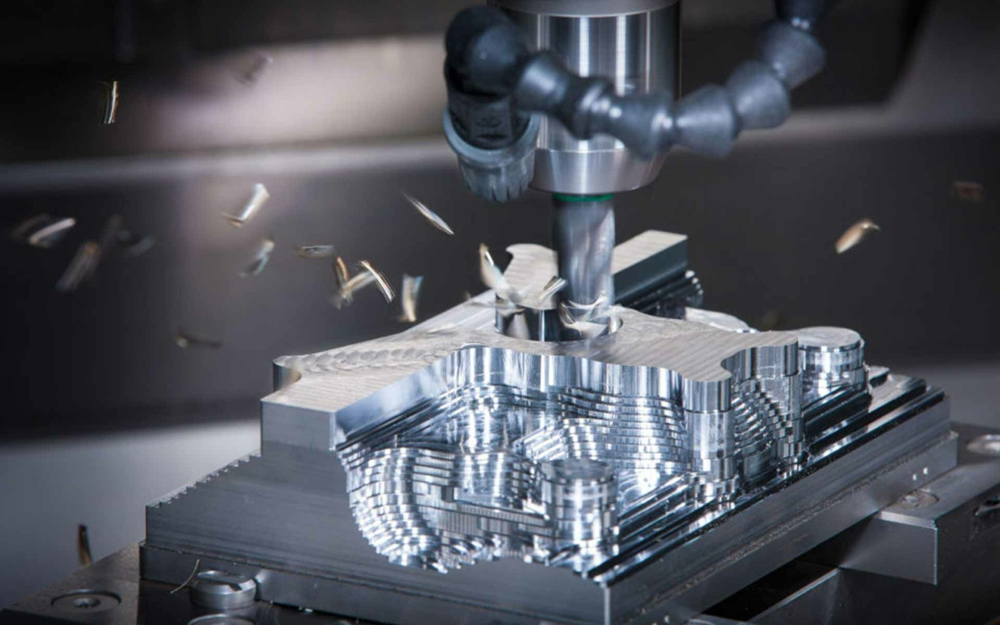
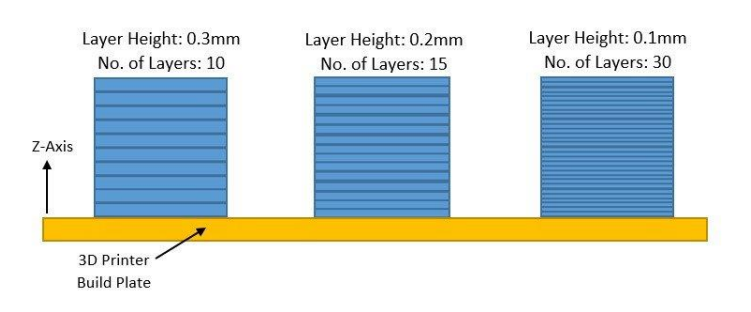
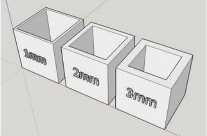
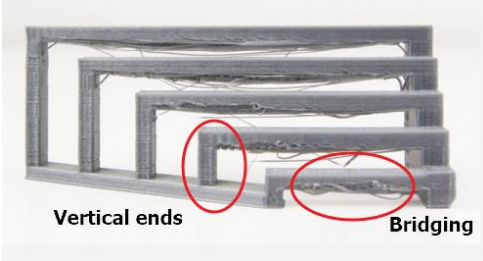
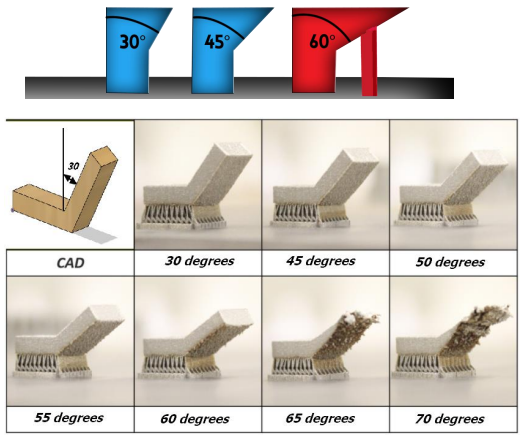
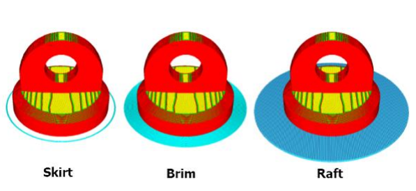
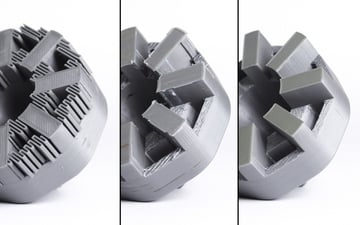

Overview on 3D Printing
In this guide, I am going to do a quick overview on 3D printing and show you prep an STL file for 3D printing using Ultimaker Cura.
What is 3D printing?
| Additive |
Subtractive |
 |
 |
3D printing also known as additive manufacturing is a process of creating a solid object from a digital drawing. The creation of a 3D printed object is made through the
use of the additive processes. In an additive process an object is creaeted by laying down successive layers of material until the object is created. Each of these layers can be seen as a thinly sliced cross-section of the object.
This is contrast to subtractive manufacturing where the material is removed from a solid block to create the object. 3D printing enables you to produce complex shapes using less material than traditional manufacturing methods.
What are the benefits of 3D printing?
One of the main advantage of 3D printing is that anyone who has the necessary skill and equipment can manufacture anything they want. It can be ideal for rapid prototypinng helping with visualisation. The only disadvantage
is that it is very slow. The material may not have the strength.
This is the Workflow of how 3D printers work
Fusion 360 file > .STL file > Cura (A Slicer) > Gcode (Machine Code basically insturctions for a 3D printer to understand) > 3D printer
- Create a 3D Model of the object using CAD
- Extract the 3D Model representation (.STL, .OBJ, .3MF)
- Use a slicer (e.g. CURA) to slice the model into layers.
- Extract each layer into a machine readable file (.GCODE)
- . Send to the 3D Printer for fabrication
Layer Height
| Example |
Explaination |
|  |
- The picture shows the height of each printed layer
- The Thinner layers give finer prints, however, this will result in a slower print time
- Range: 0.1 ~ 0.4 mm (½ nozzle diameter)
- Affects resolution, smoothness and time taken to print.
|
Wall Thickness
| Example |
Explaination |
|  |
- Wall Thickness creates the number of strands to make up the thickness of the wall.
- This affects time and strength of print
- Example: Wall thickness = 3mm using 0.2 layer
- Inner wall : 0.8 mm
- Outer wall : 0.8 mm
- Wall thickness: 1.4 mm (7 passes of the nozzle)
|
Infill Percentages
| Example |
Explaination |
 |
- Controls the amount of fill in the internal cavities.
- Higher percentages take longer time, but higher strength
- Example: Wall thickness = 3mm using 0.2 layer
- Can specify the type of infill pattern structure (lines, triangles)
- Typical infill: 10 ~ 20%
|
Infill Percentages
| Example |
Explaination |
|  |
- Prints between 2 points that have no connection to each other.
- 3D Printer prints the base layer, then the vertical structures.
- Horizontal structures have no supports other than at the end.
- There is a max distance you can bridge without stringing
|
Overhang limits
| Example |
Explaination |
|  |
- Most printers can handle an overhang of 45°.
- There is a limit where there is insufficient support
- All 3D printers cannot print on air
- It is recommended that you do a test print to determine your overhang angle
|
Platform adhesion
| Example |
Explaination |
|  |
- Printer bed is heated to improve adhesion
- Sometimes print object requires help in adhering to plate
- A Raft is a base of extruded material, the object is built on it
- Brims allow some extra adhesion to the base of object
- Skirts are used to clean/extrude material to test
|
Supports
| Example |
Explaination |
|  |
- Supports are used to aid in printing overhangs
- Support make impossible prints possible
- Supports are removed after printing
- Sometimes, the positing of the print can help in reducing the need for support
|
After going through an overview of 3D printing, I will show a quick guide on how to import a file into Cura and convert it into Gcode.